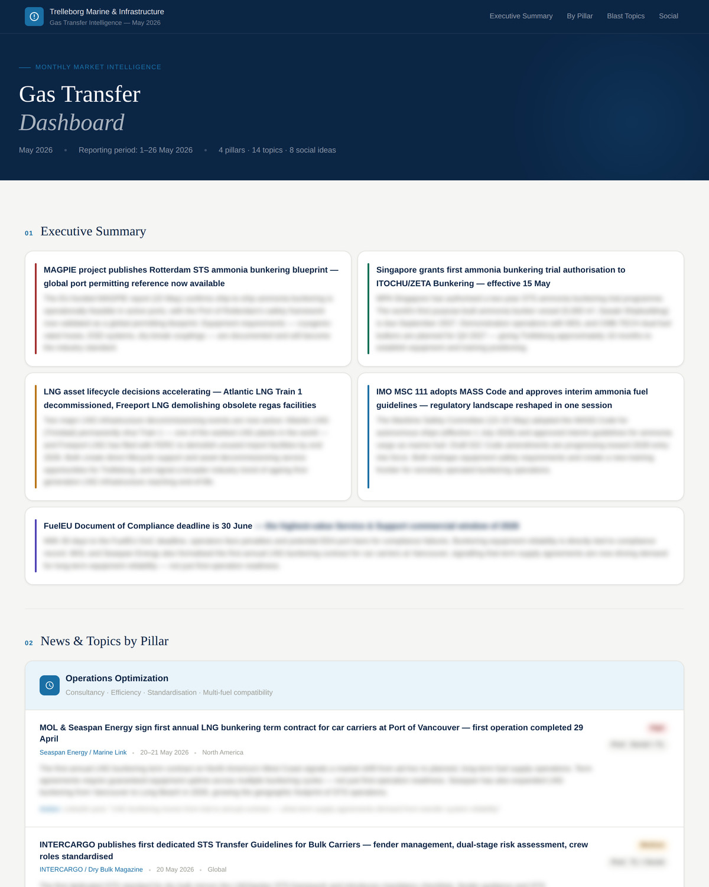
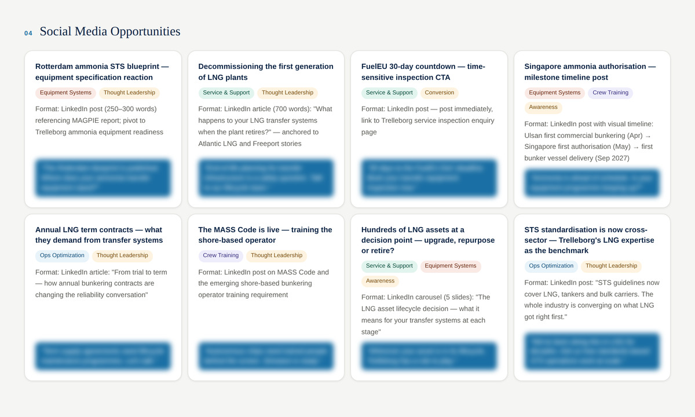
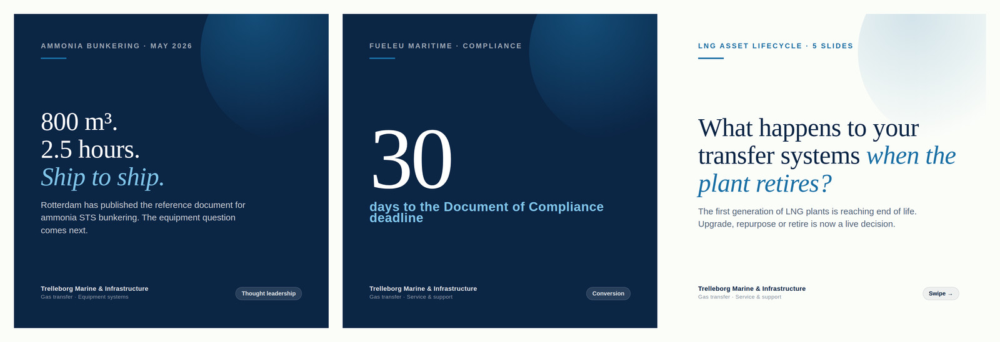
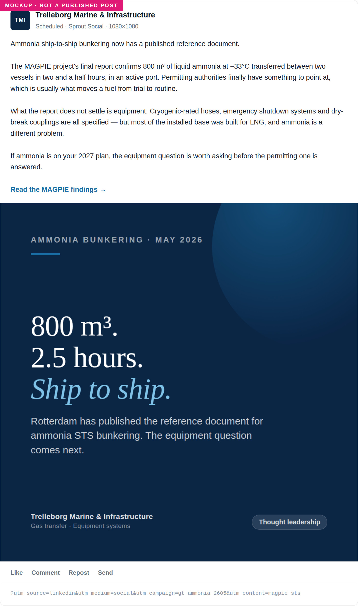

An AI system for planning and producing content
A monthly intelligence brief that decides what to make, and a set of skills I built that make it. Both stop for approval before anything is published.
Two LinkedIn pages, four product lines, a trade show calendar, a Knowledge Hub that publishes technical articles, and press coverage arriving without warning. In a small marketing team that produces two recurring problems.
The first is planning. Keeping track of competitor movements, regulatory changes and market news across four product lines properly is most of a week a month. It doesn't get done, so content planning defaults to whatever the last conversation with a product manager was about.
The second is production. Every post has the same set of rules attached to it: which template, which image dimensions, where the logo sits, what the caption structure is, whether the link is tracked, which board the ticket goes on. Those rules are easy to hold for the first post and easy to drop by the twentieth.
Split the work where judgement starts
The version I wanted to avoid is the one where AI writes the analysis and someone forwards it unchecked. The model has no way of knowing which competitor announcement is a real threat and which is a re-release from two years ago, and one confidently wrong summary is enough for the product managers to stop reading.
So the split is at the same point everywhere. Collection, classification, assembly and first drafts are automated. What matters, what's accurate and what gets published are not. Everything below is built on that line.
A monthly intelligence brief
One document a month covering competitor activity, market news and content direction across the four gas transfer product lines.
-
Collection
Trade press, competitor announcements, competitor social activity and market news, against a fixed source list and a fixed set of queries, so the output is comparable month to month rather than dependent on what surfaced that day.
-
Classification
Everything is sorted into the four product lines before it's read. A product manager only has to read their own section, which is why they read it.
-
First draft, with sources attached
What moved, who moved it and what it connects to. Every claim carries its source, so the brief can be checked. When a product manager disputes something, the argument is about the source rather than about whether the tool can be trusted.
-
Editing
Where most of it gets cut. Removing noise, correcting what the model got wrong, and identifying the few signals with a real implication for us. This is the part I have kept manual, and I think it should stay that way.
-
Content angles out the other end
Each section ends with the post and campaign angles that follow from what happened, so the monthly content plan comes out of market observation rather than a separate ideas exercise. This is the handover point into production.

One page of the monthly brief
The top of a real month.
Redacted for public display.
Save as images/07-intelligence-brief.jpg · 1200×1500 · JPG

Where the brief hands over
The angles section.
Redacted for public display.
Save as images/07b-brief-angles.jpg · 1200×720 · JPG
Skills I built, one per content type
Rather than prompting from scratch each time, I built a skill for each of the three things we publish most. Each one holds the brand guidelines, the template names, the image dimensions, the caption structure and the house tone.
-
Article and press coverage posts
Takes a Knowledge Hub article or a piece of press coverage. Builds the square creative from the house layout using the article's own hero image, writes the caption with the read-more call to action, and appends the standard UTM parameters so the link is tracked the same way every time.
-
Event and conference posts
Takes an event name, dates and venue. Builds the 1080×1080 creative from our event layout, pulling the event logo and background from the team's banner template, and writes the caption in house tone.
-
Product, project and case study posts
Takes a source asset — a product photo, a brochure page, an infographic, a site photo, or just a topic — and produces the copy plus a correctly sized image with the logo composited in its own margin. It never alters the content of the source photograph, which matters when the photograph is of a real installation.
A fourth skill rewrites a rough request into a properly structured brief. That one exists because the other three are only as good as what they're given.

Three creatives from one brief
Mockups.
Mockups.
Save as images/10-post-set.jpg · 1600×548 · JPG

The whole unit the skill produces
Mockup.
Mockup.
Save as images/09-post-mockup.jpg · 1400×2366 · JPG

A skill running
One of the three skills mid-execution — the request going in and the assembled post coming out. This is the single hardest thing on the site for anyone else to claim, so it is worth showing rather than describing.
Screenshot the conversation. Crop to the useful part: the instruction, then the output with the creative visible. Blur anything unreleased.
Save as images/06-skill-running.jpg · 1600×1100 · PNG
Why skills rather than prompts
A prompt has to be re-explained every time, and in my experience it gets re-explained slightly differently each time. The image ends up eight pixels off, the logo margin disappears, the UTM parameters get forgotten, the caption picks up a tone that isn't ours.
A skill holds all of that as written instructions rather than as something I have to remember. The value isn't speed on any one post. It's that the twentieth post is built to the same rules as the first, and that a colleague can run it and get the same result.
The post isn't the end of the job
Most of the administration around a social post sits after the creative is finished. Export the file, raise the ticket on the content calendar, log the tracked link to the link register, schedule it. Each step is small and each one is easy to skip.

The content calendar board
The monday.com board with tickets the skills raised, so the calendar entry is a by-product of building the post rather than a separate job someone has to remember.
Board view. Rename or blur anything client-identifying.
Save as images/08-monday-board.jpg · 1400×900 · PNG
The skills carry through to all of it. On approval they export the PNG, raise or update the ticket on our content calendar board in monday.com, log the tracked link to the register, and schedule the post in Sprout Social. Which means the UTM parameters, the calendar entry and the link register can't be forgotten, because they aren't separate tasks any more.
Nothing publishes automatically. Every skill assembles and then stops for approval. I check the technical claims, the image and the caption before anything is exported or scheduled, and product managers still sign off anything that makes a specification claim.
That approval step is deliberate rather than cautious. In a technical sector the cost of one wrong published claim is much higher than the time saved by removing the check, and the credibility of the whole system depends on it not producing something embarrassing.
The same split elsewhere
This is how I use AI across the rest of the job: research, translation checks, campaign reporting, first drafts. It's useful for collection, assembly and synthesis, and not useful for judgement. Being clear about which side a task falls on is most of what makes it work.
01 A go-to-market programme for five Latin American markets →
Brazil, Chile, Peru, Colombia and Mexico, entered through agents.